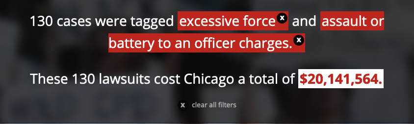

Tips for Investigative Reporting
Jonah Newman | Injustice Watch
jonahnewman.com/talks/investigative-reporting-tips
Hit "S" to enter presentation mode
Lesson #1: Get in a data frame of mind
We knew that police misconduct was a problem. But we wanted to find a way to quantify it--and a way that was different from what had been done before.
Approaching a story idea with the mindset that you are going to quantify or measure something.
Define your story ideas as questions, not statements Tune your radar to pick up opportunities to quantify If a source tells you about a trend, ask how they know that–then get the data Find out what data are collected on your beat, how often they're collected, how they're used. Then check them regularly. When news breaks ask, "How often has this happened in the past?"
Define your story ideas as questions, not statements: Instead of saying, I want to do a story about non-Latinx immigrants at the border. Say, How many border crossers last year came from non-Latinx countries and how has that changed over time?
Tune your radar for opportunities to quantify: As you're reporting out a story, always be thinking about things you could quantify. Has some measure changed over time? Are there differences between one part of the country and another?
Lesson #2: If the data don't exist, find another way
There was no data yet on trends within police misconduct lawsuits. So we created our own database. That allowed us to find trends that hadn't been reported on before. For example, we found that 10 percent of cases involved children or minors.

For example, we found that in a lot of cases, someone was charged with aggravated battery or assault to a police officer at the end of an incident that involved excessive force.
Lesson #3: It's not a story if there's no narrative
Data can only tell part of the story. You also need humans, to make your reporting real and urgent.
Lesson #4: Look for solutions
Who is responsible?
Is someone doing it better?
Investigative reporting is about holding the powerful--people, institutions, systems--accountable. One of the best ways to do that is to find somewhere else that's doing it better. We found lots of cities that were analyzing police misconduct lawsuits to find the trends that Chicago was missing.
Example #2: Concordia Place
This was a story about a security company that had been hired by the owners of a subsidized apartment complex to "protect" the property. But was instead terrorizing the residents--and using taxpayer dollars to do it.
This is Sheena Godfrey, a mother I met who was so afraid of the guards she had basically moved to her boyfriends.
Lesson #5: Go to community meetings
The story got started because I went to a meeting hosted by MTO. It was an opportunity for their residents living in HUD-subsidized housing to speak to a regional director of HUD. Was sitting there and suddenly women got up and started talking about private security guards with assault rifles. My ears perked up.
Lesson #6: Don't give up
I was introduced to Sheena, who you saw earlier, by another tenant who I had met at the community meeting and who had invited me to her apartment and invited over several other women. She was incredibly warm and open to talking. And then she ghosted me--stopped responding to texts and phone calls. But I kept trying. And eventually she answered. She was concerned the first woman, who had connected us, was close to the management company and didn't trust her. But we were able to connect and she was an important source.
Lesson #7: Ask sources for documents, emails, texts
Lesson #8: Look for lawsuits
The women had filed a lawsuit. But, it turned out, so had Ricky Martinez. His lawsuit was against Chicago Police, claiming discrimination based on religion. Ricky Martinez, it turned out, was also known as Zouheir Rahmani, a wannabe cop who had applied several times for several different departments.
Lesson #9: FOIA early and often
FOIA can be a great tool. In part, as Jack Gillum says, "This is your right as a citizen."
Know what to FOIA for. Be as specific as possible. I figured out what forms you need to file to become a private security guard. Turned out that Ricky Martinez had started A-Alert Security before he had the proper license.
Fight back if you don't get what you ask for.
Know the FOIA law .
Agencies are often relying both on your ignorance of your rights under the law and that you won't fight back. Prove them wrong. Story about Title IX here. Also, know the limits of the law and don't ask for too much. Try to talk directly to the people who know the data.
Other FOIA Tips
Be patient, but persistent
Sometimes it helps to pick up the phone
It is important to ask in the right way
For a story on police early intervention, I wanted to know how many people where in CPD's early intervention programs.
"Records sufficient to show the number of sworn personnel who were placed into the Behavioral Intervention System and Personnel Concerns programs, by year, from 2011 to 2015 (to date)."
"Names and badge numbers of all officers enrolled in the Behavioral Intervention System and Personnel Concerns programs"
Questions?
Phone: (312) 673-3807